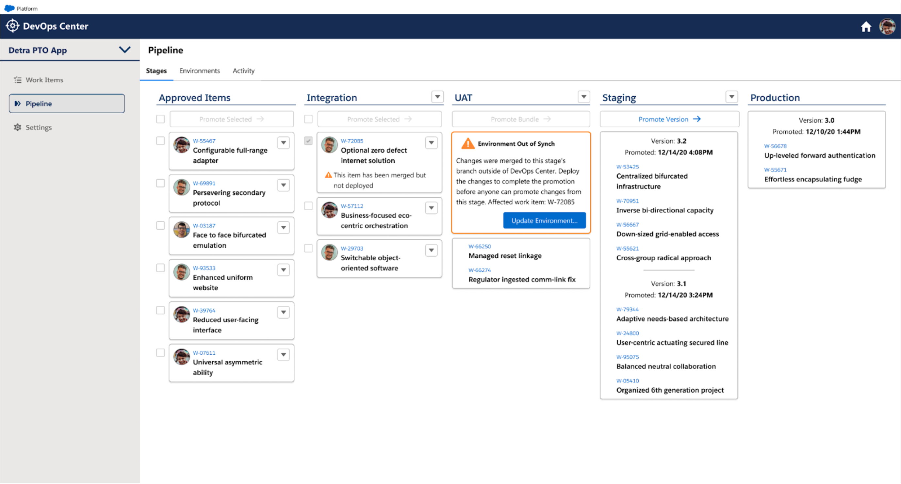

Hi! I'm Tim. I want to help you build your virtual mission control.

Service Console
Release Pipeline
Security Dashboard

Analytic Notebook

Pharmacokinetic Modeling
IoT Fleet Management
Right now I am looking for new fulltime leadership opportunity to join a crack team working to solve a complex system management problem in the area of logistics, manufacturing, alternative energy or ecological health.
I will bring design craft to your team and hit the ground running. Beyond user experience, I have expert conceptual understanding of system thinking, machine learning, network architecture, high scale compute, and biological systems.
I was the initial design hire at a streaming data analytics start up where I built a design studio of 5 that executed all design work for product and marketing.
I acted as player/coach managing and growing my team, directing the overall creative output of my studio, leading detailed design projects and providing the executive team with UX strategy.
I oversaw the design of a simple, elegant website.

Full time employee responsible for:
I was the initial design hire at a streaming data analytics start up where I built a design studio of 5 that executed all design work for product and marketing.
I acted as player/coach managing and growing my team, directing the overall creative output of my studio, leading detailed design projects and providing the executive team with UX strategy.
I oversaw the design of a simple, elegant website.
I designed a straight forward experience for adding data to the system.

I was creative director for the product design system including data visualizations.

Michael Demmer, Vice President, Engineering at Jut
Steve McCanne, CEO & Founder at Jut
Full time employee responsible for:
I dramatically improved the Jaspersoft user experience by adding search functionality and by introducing an engaging and consistent visual design.
I also led the project to modernize the application front end framework, with a modular and standards-compliant design system I created and implemented before Bootstrap popularized the concept.
I championed and designed the faceted search functionality for Jasperserver.

I developed consistent visual and layout standards for all the Jasperserver interfaces.

I architected and wrote the markup and css for a modular, theme-able front end framework.

Semantic Markup

Object-Oriented CSS

Mary M. Flynn, Worldwide Sales Engineering, Jaspersoft
Angus Croll, Architect, Jaspersoft
Contractor responsible for:
I collaborated with a great team at Hot Studio to work on the redesign of Akamai's self-service portal. I contributed to the user research, UX strategy and design that led to a much easier to understand navigational model for the experience.

Danielle Malik, Executive Director, User Experience, Hot Studio
Constractor responsible for:
I contracted with GE's Predix project to develop a process for integrating UX and Agile. The plan was that I would pilot this first with a specific scrum team and then work on exporting the approach to other teams within the organization.
I exceeded expectations at this assignment by focusing first on gaining the trust of the software manager and developers on the team through my understanding of the technical details of software development. From this position of credibility I was able to inject a long term vision and structured, repeatable user-centered methods into all stages of their Agile cycle. I consolidated the value I had introduced by mentoring a young designer on the team to be able to drive the vision and the Agile/UX integration process I had developed. Other scrum teams observed the positive outcomes of the pilot and began requesting dedicated UX support.
Dan Harrelson, Design Director for Energy Management & Design Technology, GE
Full time employee responsible for:
I worked for the Apple Online Store on search and community features.


Part time employee responsible for:
I was part of the founding faculty for the undergraduate Interaction Design Program at California College of Art. I developed the curriculum for the class that introduced sophomore students to System Thinking and then taught it for 3 years.
Here is a video about a class project I organized with Adobe.
Freelancer responsible for:
I helped this data science consulting company explain their service offering to prospective customers.
This illustration explains how an analytic method called pharmacometrics is used to inform drug development decisions.

I created artwork to explain and represent each of the company's several service offerings.

Full time employee responsible for:
At Schwab I managed designers and was also responsible for encouraging innovation.
One of my initiatives improved internal strategy discussions by introducing a simple, visual model of Schwab's retail business that was easily sketched on a whiteboard during meetings.
The model, reproducible by anyone, created a shared discussion context in meetings

One variation was used to envision new business lines

Another variation helped to plan different service levels